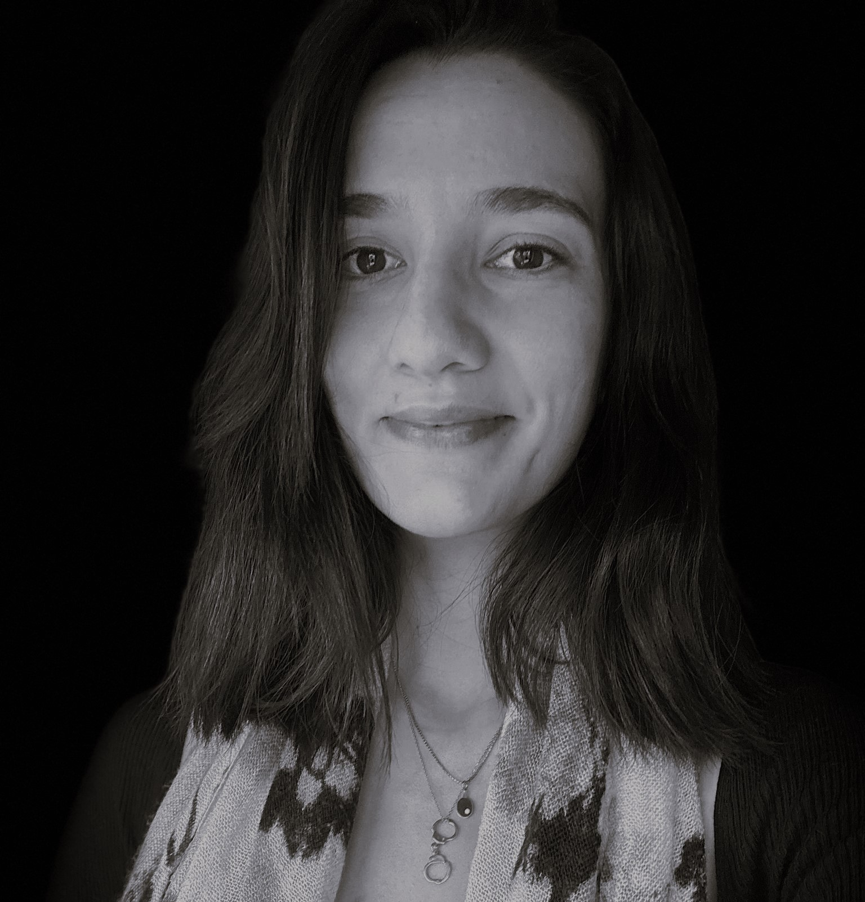
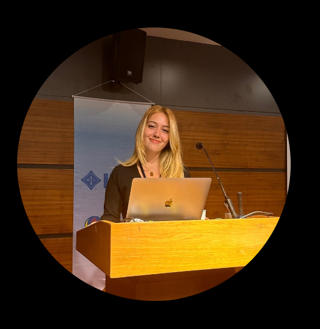

About
Learn more about me

Game Developer & Game Designer &
Game QA Tester & Full-Stack Developer
I am continuing my undergraduate education at TED University Computer Engineering Department as Senior student. I have been working on Game Industry more than 2 years.
- Birthday: 30 June 2000
- City: Ankara, Türkiye
- Age: 23
- Degree: Undergraduate
- Email: nilayozkir@gmail.com
- Freelance: Available
I am passionate about developing excellent software. Every project I work on makes me more expert. I'm always looking for new opportunities to work with clients on both short and long term projects. I am a software developer who constantly strives for new experiences, especially with my passion for the gaming industry and what I have accumulated. Games are both a source of entertainment and the center of my career for me.
Personal Skills
Foreign Languages
Testimonials
Nilay, with her passion and determination in game development, always inspires. As someone who constantly strives for self-improvement, she approaches every project with incredible energy and dedication. Working with her means experiencing the perfect blend of creativity and professionalism.
Karya Ercan
Game Designer
Nilay is a valuable friend of mine who I worked alongside with in different projects. I confidently say that she is one of the very few when it comes to completing tasks tenaciously. She is very determined even under most stressful times and most difficult tasks. Nilay's positive attitude and willingness to go the extra mile make her a valuable asset to any team. I highly recommend her for any role that requires creativity, dedication, and professionalism.